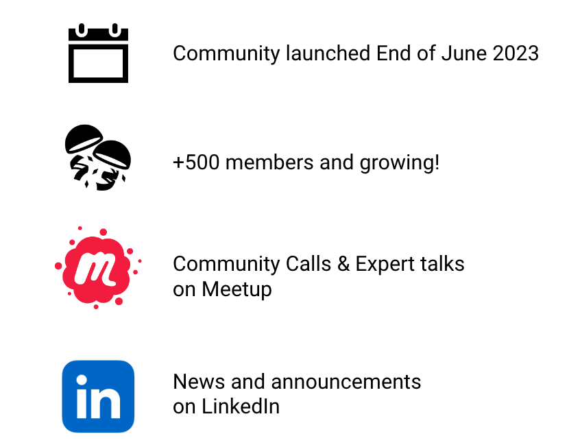

GenAI Gurus is an innovative, non-profit organization that stands at the exciting intersection of science and arts, powered by Generative AI.
We recognize the transformative potential of these technologies on the workplace and the broader societal landscape.
By joining GenAI Gurus, you don’t just join a community; you position yourself in the driving seat of a network of passionate individuals, all committed to shaping the future.
